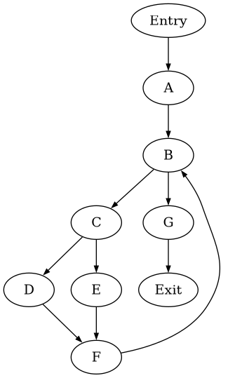
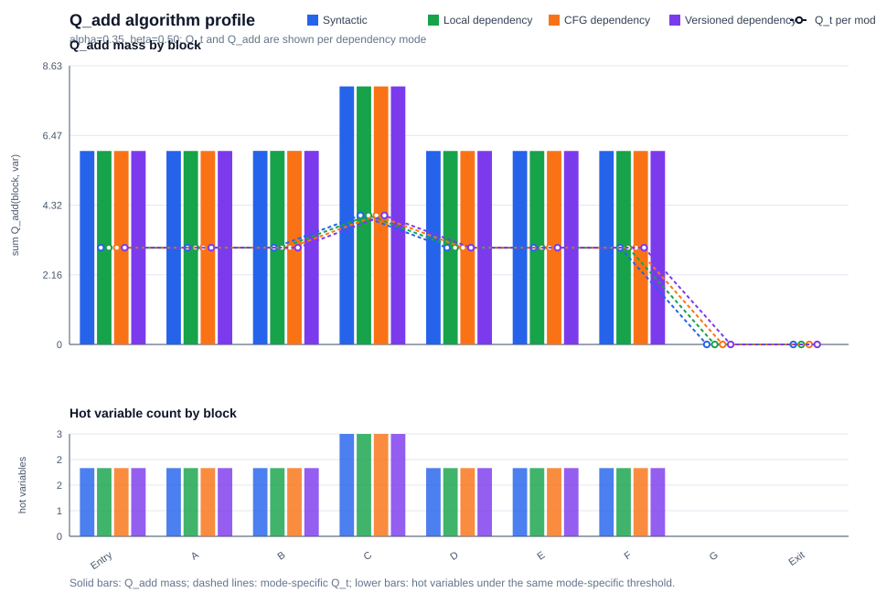
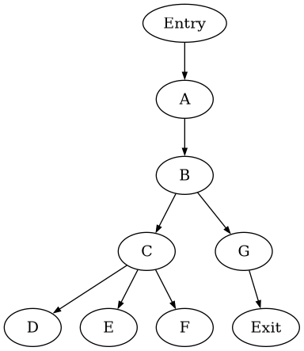
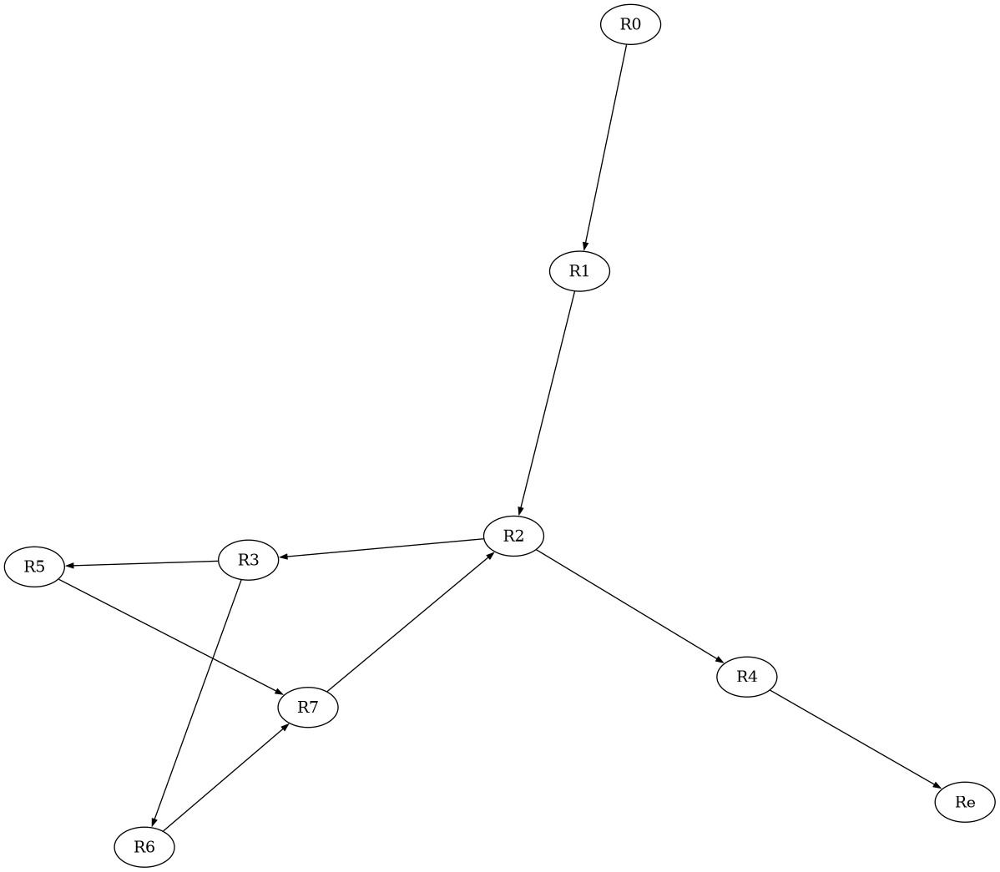
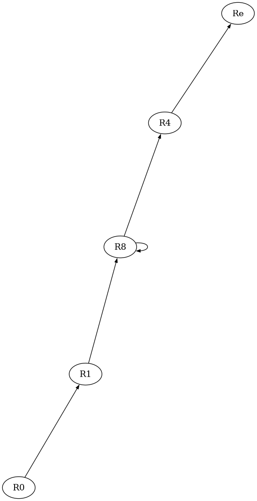
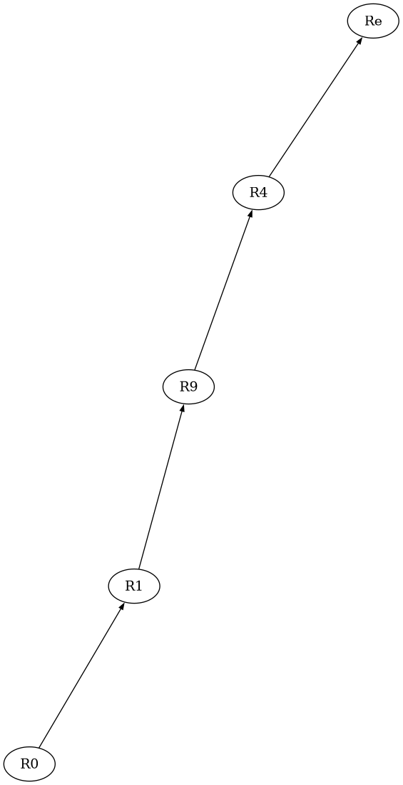
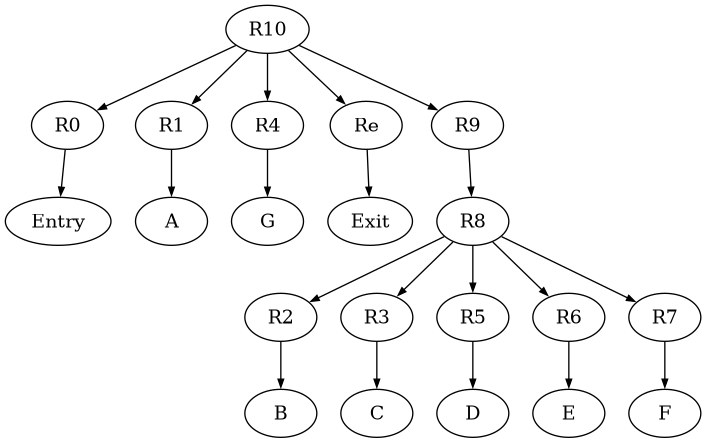

Block A 4 lines
param i param n param target matches ⟵ # 0
Pipeline report
Generated from the current MIR input and analysis stages.

Tracederivation steps
| block | branch | condition symbols | true edge | false edge | prefixes shown | path prefix | status |
|---|---|---|---|---|---|---|---|
| B | ifFalse i < n goto G | i, n | B → C | B → G | 3 | true i < n ∧ target = i i < n ∧ ¬(target = i) |
syntactic; no SMT feasibility check |
| C | ifFalse target = i goto E | i, target | C → D | C → E | 1 | i < n | syntactic; no SMT feasibility check |
Algorithm metrics
| mode | variables | dependency blocks | max Qt | total Qadd mass | L1 Δ vs CFG | hot refs | status |
|---|---|---|---|---|---|---|---|
| Syntactic | 3 | 2 | 4.00 | 43.96 | 0 | 15 | aggregate over displayed blocks |
| Local dependency | 3 | 2 | 4.00 | 43.96 | 0 | 15 | aggregate over displayed blocks |
| CFG dependency | 3 | 2 | 4.00 | 43.96 | 0 | 15 | aggregate over displayed blocks |
| Versioned dependency | 3 | 2 | 4.00 | 43.96 | 0 | 15 | aggregate over displayed blocks |
Syntactic branch variables
| block | Qt | hot variables | Qadd(block, var) | status |
|---|---|---|---|---|
| Entry | 3.00 | i, n | i:3.00, n:2.00, target:1.00 | alpha=0.35, beta=0.50; syntactic C relation |
| A | 3.00 | i, n | i:3.00, n:2.00, target:1.00 | alpha=0.35, beta=0.50; syntactic C relation |
| B | 3.00 | i, n | i:3.00, n:2.00, target:1.00 | alpha=0.35, beta=0.50; syntactic C relation |
| C | 4.00 | i, n, target | i:4.00, n:2.00, target:2.00 | alpha=0.35, beta=0.50; syntactic C relation |
| D | 3.00 | i, n | i:3.00, n:2.00, target:1.00 | alpha=0.35, beta=0.50; syntactic C relation |
| E | 3.00 | i, n | i:3.00, n:2.00, target:1.00 | alpha=0.35, beta=0.50; syntactic C relation |
| F | 3.00 | i, n | i:3.00, n:2.00, target:1.00 | alpha=0.35, beta=0.50; syntactic C relation |
| G | 0 | None | None | alpha=0.35, beta=0.50; syntactic C relation |
| Exit | 0 | None | None | alpha=0.35, beta=0.50; syntactic C relation |
Local dependency variables
| block | Qt | hot variables | Qadd(block, var) | status |
|---|---|---|---|---|
| Entry | 3.00 | i, n | i:3.00, n:2.00, target:1.00 | alpha=0.35, beta=0.50; local dependency C relation |
| A | 3.00 | i, n | i:3.00, n:2.00, target:1.00 | alpha=0.35, beta=0.50; local dependency C relation |
| B | 3.00 | i, n | i:3.00, n:2.00, target:1.00 | alpha=0.35, beta=0.50; local dependency C relation |
| C | 4.00 | i, n, target | i:4.00, n:2.00, target:2.00 | alpha=0.35, beta=0.50; local dependency C relation |
| D | 3.00 | i, n | i:3.00, n:2.00, target:1.00 | alpha=0.35, beta=0.50; local dependency C relation |
| E | 3.00 | i, n | i:3.00, n:2.00, target:1.00 | alpha=0.35, beta=0.50; local dependency C relation |
| F | 3.00 | i, n | i:3.00, n:2.00, target:1.00 | alpha=0.35, beta=0.50; local dependency C relation |
| G | 0 | None | None | alpha=0.35, beta=0.50; local dependency C relation |
| Exit | 0 | None | None | alpha=0.35, beta=0.50; local dependency C relation |
CFG dependency variables
| block | Qt | hot variables | Qadd(block, var) | status |
|---|---|---|---|---|
| Entry | 3.00 | i, n | i:3.00, n:2.00, target:1.00 | alpha=0.35, beta=0.50; cfg dependency C relation |
| A | 3.00 | i, n | i:3.00, n:2.00, target:1.00 | alpha=0.35, beta=0.50; cfg dependency C relation |
| B | 3.00 | i, n | i:3.00, n:2.00, target:1.00 | alpha=0.35, beta=0.50; cfg dependency C relation |
| C | 4.00 | i, n, target | i:4.00, n:2.00, target:2.00 | alpha=0.35, beta=0.50; cfg dependency C relation |
| D | 3.00 | i, n | i:3.00, n:2.00, target:1.00 | alpha=0.35, beta=0.50; cfg dependency C relation |
| E | 3.00 | i, n | i:3.00, n:2.00, target:1.00 | alpha=0.35, beta=0.50; cfg dependency C relation |
| F | 3.00 | i, n | i:3.00, n:2.00, target:1.00 | alpha=0.35, beta=0.50; cfg dependency C relation |
| G | 0 | None | None | alpha=0.35, beta=0.50; cfg dependency C relation |
| Exit | 0 | None | None | alpha=0.35, beta=0.50; cfg dependency C relation |
Versioned dependency variables
| block | Qt | hot variables | Qadd(block, var) | status |
|---|---|---|---|---|
| Entry | 3.00 | i0, n0 | i0:3.00, n0:2.00, target0:1.00 | alpha=0.35, beta=0.50; versioned dependency C relation |
| A | 3.00 | i0, n0 | i0:3.00, n0:2.00, target0:1.00 | alpha=0.35, beta=0.50; versioned dependency C relation |
| B | 3.00 | i0, n0 | i0:3.00, n0:2.00, target0:1.00 | alpha=0.35, beta=0.50; versioned dependency C relation |
| C | 4.00 | i0, n0, target0 | i0:4.00, n0:2.00, target0:2.00 | alpha=0.35, beta=0.50; versioned dependency C relation |
| D | 3.00 | i0, n0 | i0:3.00, n0:2.00, target0:1.00 | alpha=0.35, beta=0.50; versioned dependency C relation |
| E | 3.00 | i0, n0 | i0:3.00, n0:2.00, target0:1.00 | alpha=0.35, beta=0.50; versioned dependency C relation |
| F | 3.00 | i0, n0 | i0:3.00, n0:2.00, target0:1.00 | alpha=0.35, beta=0.50; versioned dependency C relation |
| G | 0 | None | None | alpha=0.35, beta=0.50; versioned dependency C relation |
| Exit | 0 | None | None | alpha=0.35, beta=0.50; versioned dependency C relation |
Q_add algorithm profile
| chart |
|---|
 |
Bounded node tree
| loop | depth | node | via condition | children | inferred role |
|---|---|---|---|---|---|
| B ← F | 0 | B | loop header | C, G | branch: i < n |
| B ← F | 1 | C | i < n | D, E | branch: target = i |
| B ← F | 2 | D | target = i | F | matches = + matches #1 |
| B ← F | 3 | F | true | B | i = + i #1 |
| B ← F | 2 | E | ¬(target = i) | F | matches = + matches #0 |
| B ← F | 3 | F | true | B | i = + i #1 |
Pattern inference
| loop | pattern | evidence | inferred sketch | status |
|---|---|---|---|---|
| B ← F | loop guard | B | i < n | guarded loop candidate |
| B ← F | induction update | F | i = + i #1; i := i + 1 | linear + constant update |
| B ← F | guarded accumulator | D / E | matches += ite(target = k, 1, 0) per iteration | one-level branch/update pattern |
| B ← F | quantified sketch | B | for k in [i0, n): matches += ite(target = k, 1, 0) per iteration | report-level formula; not emitted to a solver |
Automaton walkthrough
| loop | state | case | node | condition | action | next | status |
|---|---|---|---|---|---|---|---|
| B ← F | S0 | loop exits before next iteration | B | ¬(i < n) | emit terminal leaf for current k | ACCEPT-EXIT | terminal case similar to a leaf in the execution tree |
| B ← F | S0 | loop continues | B | i < n | enter loop body for iteration k | S1 | guard accepted |
| B ← F | S1 | inner true arm | C | target = i | matches += 1 | S2 | arm block D |
| B ← F | S1 | inner false arm | C | ¬(target = i) | matches += 0 | S2 | arm block E |
| B ← F | S2 | latch / repeat | F | after either arm | i = + i #1; k := k + 1 | S0 | i advances + 1 |
| B ← F | ACCEPT | regular family | B | guard + branch arms + latch | for k in [i0, n): matches += ite(target = k, 1, 0) per iteration | merged schema | accepted bounded approximation |
Tracederivation steps
| family | status | why unavailable | current action |
|---|---|---|---|
| Array transformations | stub | current MIR has no array read/write syntax or array values | keep as documentation-only placeholder |
| Function summaries | stub | current MIR has param/return but no call instruction, callee identity, or call graph | keep as documentation-only placeholder |
| Heap/list/shape execution | out of scope | current MIR has no heap allocation, fields, references, aliases, or predicates | do not expand parser for this dump-first task |
| Compiled symbolic execution | out of scope | project is not compiling LLVM/C/Java into a symbolic executor | no implementation planned |
No instructions in this block.
| 1 |
|
|
| 2 |
|
|
| 3 |
|
|
| 4 |
|
| 1 |
|
|
| 2 |
|
| 1 |
|
|
| 2 |
|
| 1 |
|
|||
| 2 |
|
|||
| 3 |
|
|||
| 1 |
|
|||
| 2 |
|
|||
| 3 |
|
|||
| 1 |
|
|||
| 2 |
|
|||
| 3 |
|
|||
| 1 |
|
No instructions in this block.
Tracederivation steps
| block | Entry | A | B | C | D | E | F | G | Exit |
|---|---|---|---|---|---|---|---|---|---|
| Input(block) | None | i, n, target | i, n | i, target | None | None | None | matches | None |
| Output(block) | None | matches | None | None | matches | matches | i | None | None |
| node = | Entry | A | B | C | D | E | F | G | Exit |
|---|---|---|---|---|---|---|---|---|---|
| Pred(node) | None | Entry | A, F | B | C | C | D, E | B | G |
| Dom(node) | Entry | Entry, A | Entry, A, B | Entry, A, B, C | Entry, A, B, C, D | Entry, A, B, C, E | Entry, A, B, C, F | Entry, A, B, G | Entry, A, B, G, Exit |
| Idom(node) | None | Entry | A | B | C | C | C | B | G |
| DF(node) | None | None | B | B | F | F | B | None | None |

| node = | Entry | A | B | C | D | E | F | G | Exit |
|---|---|---|---|---|---|---|---|---|---|
| Pdom(node) | Entry, A, B, G, Exit | A, B, G, Exit | B, G, Exit | B, C, F, G, Exit | B, D, F, G, Exit | B, E, F, G, Exit | B, F, G, Exit | G, Exit | Exit |
| Ipdom(node) | A | B | G | F | F | F | B | Exit | None |
| CD(node) | None | None | B | B | C | C | B | None | None |
Tracederivation steps
| var = | i | matches |
|---|---|---|
| Blocks(var) | F | A, D, E |
| is Global | + | + |
Tracederivation steps
| block = | Entry | A | B | C | D | E | F | G | Exit |
|---|---|---|---|---|---|---|---|---|---|
| i | - | - | + | - | - | - | - | - | - |
| matches | - | - | + | - | - | - | + | - | - |
| n | - | - | - | - | - | - | - | - | - |
| target | - | - | - | - | - | - | - | - | - |
Tracederivation steps
Tracederivation steps
| check | status | details |
|---|---|---|
| SSA rename scope | partial | |
| Untracked variables | not renamed | |
| Tracked definitions named | + | ok |
| Tracked uses named | + | ok |
| Unique tracked definitions | + | ok |
| Phi arity matches predecessors | + | ok |
Tracederivation steps
| join | predecessors | variable | merge preview | merge metrics | status |
|---|---|---|---|---|---|
| B | A, F | i | ite(path(A), i0, i2) {(path(A), i0), (path(F), i2)} |
preds=2, mapped=2, ite ops=1, summary entries=2 | predecessor-mapped; no SMT check |
| B | A, F | matches | ite(path(A), matches1, matches5) {(path(A), matches1), (path(F), matches5)} |
preds=2, mapped=2, ite ops=1, summary entries=2 | predecessor-mapped; no SMT check |
| F | D, E | matches | ite(path(D), matches3, matches4) {(path(D), matches3), (path(E), matches4)} |
preds=2, mapped=2, ite ops=1, summary entries=2 | predecessor-mapped; no SMT check |
Tracederivation steps
| join | predecessors | candidate merged vars | merged source deps | future hot vars | risky overlap | decision | reason |
|---|---|---|---|---|---|---|---|
| B | A, F | i, matches | i | i, n | i | mixed | some merged dependencies may flow into future branch conditions |
| F | D, E | matches | None | i, n | None | merge-friendly | merged dependencies do not overlap future hot variables |
Tracederivation steps
| merge site | variable | ite preview | future branch | expanded branch preview | ite ops | ite depth | expr size | status |
|---|---|---|---|---|---|---|---|---|
| B | i | None | None | None | 0 | 0 | 0 | missing expression: source expression could not be reconstructed |
| B | matches | None | None | None | 0 | 0 | 0 | missing expression: source expression could not be reconstructed |
| F | matches | matches = ite(i < n ∧ target = i, matches + #1, matches + #0) | None | None | 1 | 1 | 16 | no future branch |



Tracederivation steps
| entry | exit | nodes | loop-free | paths shown | path summary preview | status |
|---|---|---|---|---|---|---|
| B | G | B, C, D, E, F | - | 0 | not emitted | cycle detected; transition: incomplete loop / resume normal dump |
| C | F | C, D, E | + | 2 | path 1: target = i → F path 2: ¬(target = i) → F |
syntactic acyclic summary; no SMT/store execution |

| Class | Area-Node | Area-Body | Area-Loop |
|---|---|---|---|
| Region | Re, R0, R1, R2, R3, R4, R5, R6, R7 | R8, R10 | R9 |
Tracederivation steps
| block | Entry | A | B | C | D | E | F | G | Exit |
|---|---|---|---|---|---|---|---|---|---|
| genblock | None | d4 | None | None | d7 | d9 | d10 | None | None |
| killblock | None | d7, d9 | None | None | d4, d9 | d4, d7 | None | None | None |
| region | Transfer Function | gen | kill |
|---|---|---|---|
| R8 | fR8, In[R2] = fR8, Out[A] ∧ fR8, Out[F] fR8, Out[2] = fR2, Out[2] ° fR8, In[R2] fR8, In[R3] = fR8, Out[B] fR8, Out[3] = fR3, Out[3] ° fR8, In[R3] fR8, In[R5] = fR8, Out[C] fR8, Out[4] = fR5, Out[4] ° fR8, In[R5] fR8, In[R7] = fR8, Out[D] ∧ fR8, Out[E] fR8, Out[6] = fR7, Out[6] ° fR8, In[R7] fR8, In[R6] = fR8, Out[C] fR8, Out[5] = fR6, Out[5] ° fR8, In[R6] |
d7, d9, d10 | d4, d7, d9 |
| R9 | fR9, In[R8] = (fR9, Out[A] ∧ fR9, Out[F])* fR9, Out[R2] = fR8, Out[R2] ° fR9, In[R8] fR9, Out[R3] = fR8, Out[R3] ° fR9, In[R8] fR9, Out[R5] = fR8, Out[R5] ° fR9, In[R8] fR9, Out[R7] = fR8, Out[R7] ° fR9, In[R8] fR9, Out[R6] = fR8, Out[R6] ° fR9, In[R8] |
d7, d9, d10 | d4, d7, d9 |
| R10 | fR10, In[R0] = I fR10, Out[0] = fR0, Out[0] ° fR10, In[R0] fR10, In[R1] = fR10, Out[Entry] fR10, Out[1] = fR1, Out[1] ° fR10, In[R1] fR10, In[R4] = fR10, Out[B] fR10, Out[7] = fR4, Out[7] ° fR10, In[R4] fR10, In[R9] = fR10, Out[A] ∧ fR10, Out[F] fR10, Out[R8] = fR9, Out[R8] ° fR10, In[R9] fR10, In[Re] = fR10, Out[G] fR10, Out[Exit] = fRe, Out[Exit] ° fR10, In[Re] |
d4, d7, d9, d10 | d4, d7, d9 |